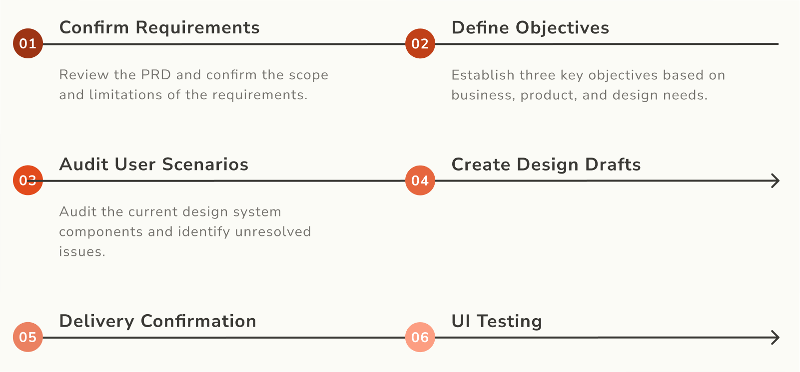
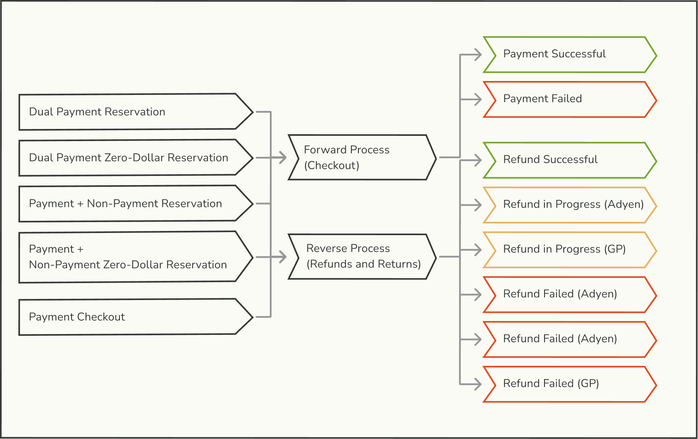
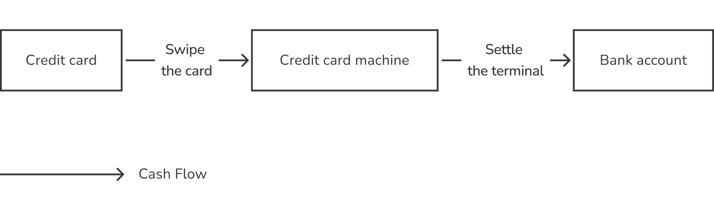
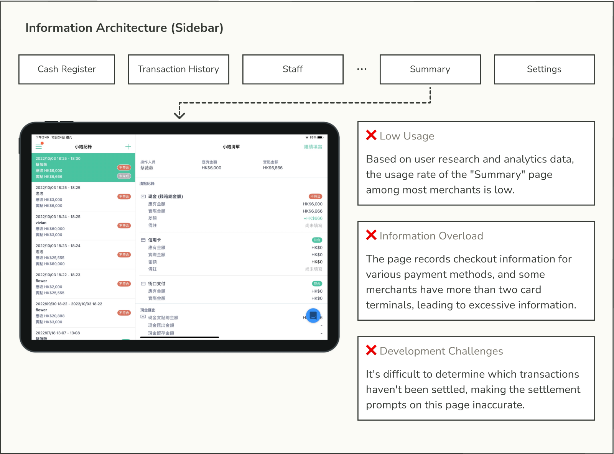
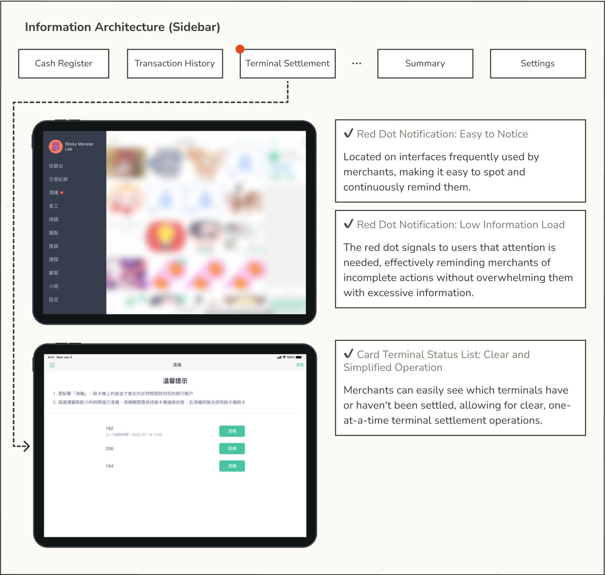
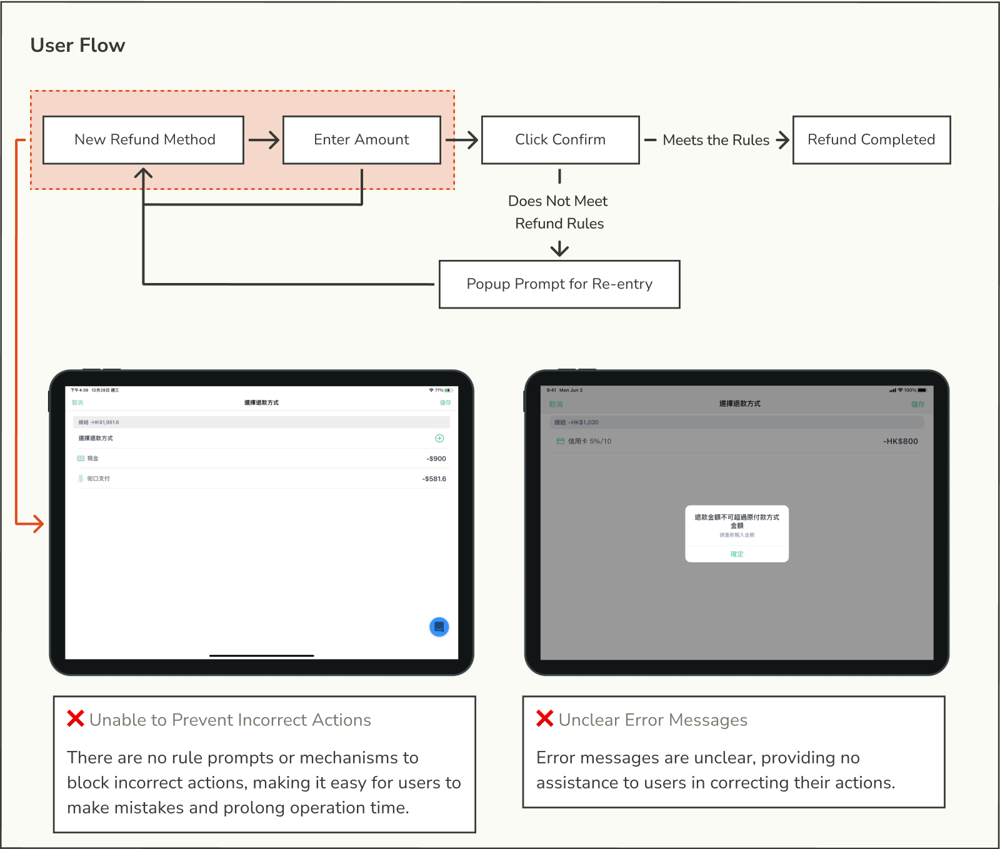
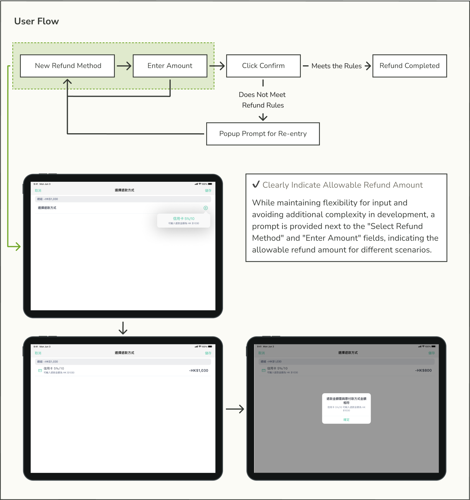

Project Background

SHOPLINE is an e-commerce platform that integrates online and offline sales, offering a POS system to help merchants manage payment processes in physical stores.
At the time of this project, SHOPLINE's POS system in Taiwan had not integrated its own payment service, requiring merchants to contract with banks directly. In Hong Kong, although payment integration was completed, multiple card terminal brands needed support, and fees remained higher than the market average.

Problem Definition
Lack of Payment Integration and High Pricing Undermining SHOPLINE's Competitiveness
No Payment Integration, Reducing Product Competitiveness
In the Taiwan market, the lack of card payment integration means merchants using SHOPLINE services must handle credit card payments separately, which decreases checkout efficiency.
Higher-than-Average Pricing, Hindering Business Promotion
In the Hong Kong market, the current card terminal payment cost is higher than the market average, making it difficult to promote and adopt the POS system.
Goal Breakdown

Business Goal: Increase Transaction Fee Revenue
Increase the number of orders using SHOPLINE Payment to boost credit card transaction fee income.

Product Goal: Provide Comprehensive Payment Services
Deliver a full suite of SHOPLINE Payment services (checkout, cancellation, refund, returns) to enable merchants to offer credit card payment options to consumers.

Design Goal: Provide Seamless Payment Experience
Ensure that merchants can quickly complete the payment process while effectively resolving errors to prevent prolonged customer wait times.
Evaluate the existing POS system mechanism by reviewing the timing of status evaluations, response times, and the differences in handling payment and non-payment methods.

Solution 1
Clearly Remind Merchants of Incomplete Card Terminal Settlement
After a card transaction, the funds are not immediately transferred to the merchant's account; a manual terminal settlement is required. Therefore, when adding the card terminal settlement feature, we need to clearly remind merchants to complete the settlement.

Original Solution
It was initially expected that merchants would use the "Summary" page in the POS system to review transactions and perform settlement. Therefore, the original requirement aimed to prompt the settlement operation on the "Summary" tab, but I found that this did not align with user habits, so I made modifications.

Revised Version
Design Focus: Ensure that important actions are promptly communicated to merchants without adding informational overload.
As a key feature for merchant payments, I designed a separate 'Settlement' tab with a red dot notification for incomplete settlements. Upon entering the page, merchants can quickly check the status of each card terminal and complete the settlement one terminal at a time.

Solution 2
Real-Time Refund Restrictions to Reduce Operational Errors
In the refund process, different payment methods and card terminal types have various refund restrictions (e.g., full refunds only or partial refunds). Without clear prompts for the applicable refund option, merchants may waste time with unnecessary attempts. Therefore, the system must preserve input flexibility while preventing incorrect actions to ensure a smooth customer experience during refunds.

Original Solution
To maintain flexibility in entering refund amounts, the original design triggered error messages only after the amount was entered. However, in some cases, merchants have only one refund option (e.g., full refund), making this design result in unnecessary actions and increased operation time.

Revised Version
Design Focus: Remind and prevent merchants from entering incorrect refund amounts without affecting operational efficiency.
I added refund amount prompts in the 'Select Refund Method' and 'Refund Method List' sections, and displayed the correct amount again in case of an error to assist merchants in completing the refund process.

Key Learnings
Reflect on the Rationality of the Solution from the User's Perspective

Even when receiving very specific requirements, a designer should still assess the business, product, and design goals. This applies even in feature-driven B2B products, where it's essential to ensure that the solution aligns with the user's context and provides a good experience. This prevents the product from becoming overly complex due to feature bloat, which can ultimately compromise usability.